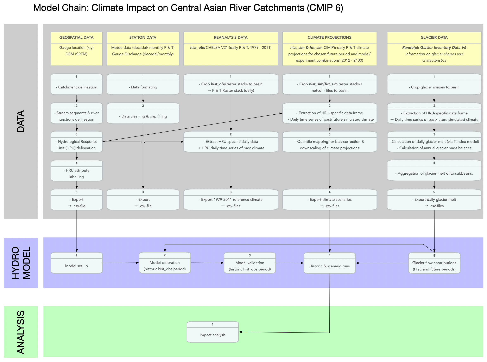

Part II: Data Sources, Retrieval and Preparation
In this Chapter and its Sections, we will discuss how to retrieve, prepare and process the data that is required for hydrological modeling.
Data include
- geospatial data,
- in-situ station data,
- snow and glacier data, and
- climate reanalysis and projections data.
As will become clear, the preparation of these data requires a substantial amount of work, local storage space and, in some instances, computational power.
Data needs vary according to the modeling approach. However, they always entail first a definition of the geometry of the river basin under consideration, second a subdivision of the basin into hydrological response units (HRUs) and third, the production of relevant time series for the individual HRUs, including climate forcing, glacier contributions, information on snow cover, etc..
An overview of all data used is provided in the Chapter 3 Sources of Relevant Data. The preparation of the discharge data as described in Chapter 4 Discharge Station Data demonstrates the necessary steps for the quality control of the observed station data. This is an important step prior to any hydrological modeling, independent of the modeling approach used.
The Chapter 5 on Geospatial Data shows the necessary geospatial analysis steps for basin delineation and the generation of the required input files for physically-based modeling using RSMinerve. These geospatial assets can then be loaded and processed in RSMinerve as shown in PartIII Chapter 8 Hydrological-Hydraulic Modeling.
Chapter 6 introduces available snow and glacier data that can be used for hydrological modeling. It also demonstrates the generation of time series data for individual hydrological response units with regard to glacier contributions. The Chapter 7 Climate Data discussed state-of-the-art high-resolution climate data for past observations of precipitation and temperature as well as climate projections and the processing and preparation of these data for hydrological modeling.
The following diagram shows the entire modeling chain for hydrological modeling. It shows that the data preparation step involves many interrelated components that partially depend on each other in a sequential way. This Chapter aims at carefully working through this modeling chain to demonstrate the preparation of all the relevant data for the subsequent modeling application.
